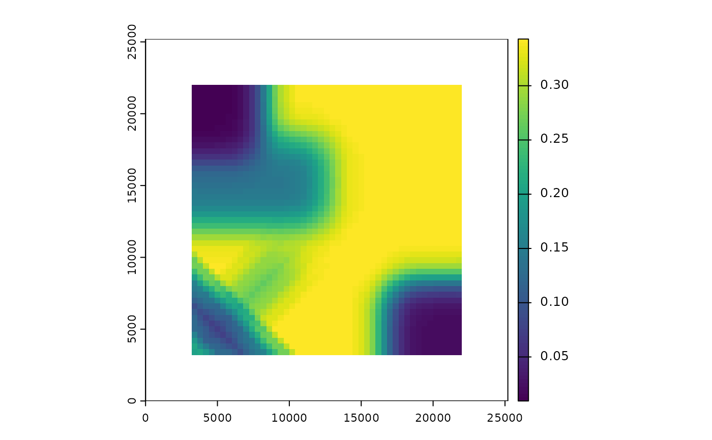
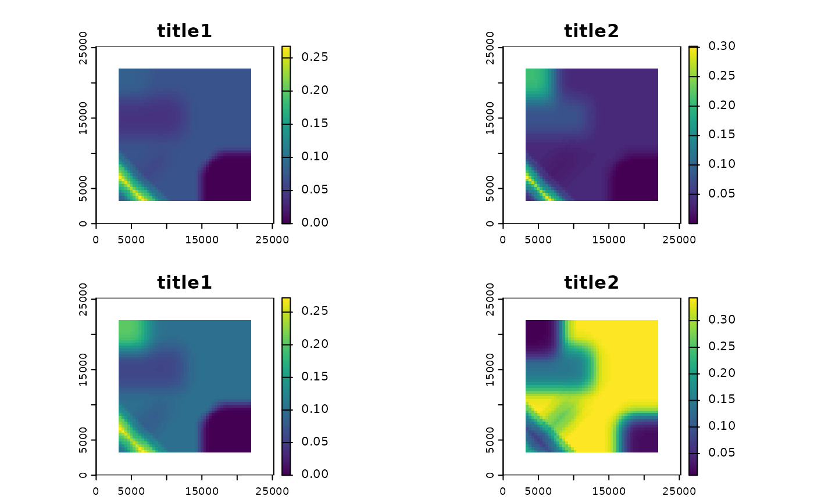
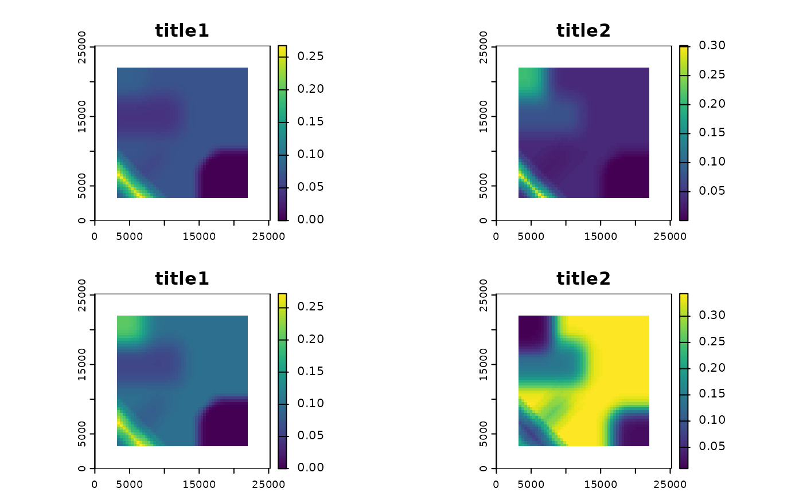

Plot the predicted habitat use from a CaribouHabitat object.
Usage
# S4 method for class 'CaribouHabitat,ANY'
plot(
x,
season = "all",
raster.title = "Probability\nof use",
tmap = requireNamespace("tmap", quietly = TRUE),
...
)Arguments
- x
A CaribouHabitat object
- season
character. By default "all" or supply a vector of seasons ie
c("Spring", "Summer", "Fall", "Winter")- raster.title
character. Title to give map
- tmap
logical. Should tmap be used for plotting by default it is used if installed
- ...
Other agruments passed to
tmap::qtmorterra::plot
Examples
# create example rasters
lc <- terra::rast(xmin = 0, xmax = 25000, ymin = 0, ymax = 25000,
resolution = 250, crs = "EPSG:5070")
lc[] <- 0
nd <- lc
nd[1:30, 1:30] <- 1
ad <- lc
ad[30:50, 3:50] <- 1
lc[] <- 1
lc[70:100, 70:100] <- 2
# create sf objects
lf <- sf::st_as_sf(sf::st_sfc(list(sf::st_linestring(matrix(c(0, 0, 10000, 10000),
ncol = 2, byrow = TRUE))),
crs = 5070))
esk <- sf::st_as_sf(sf::st_sfc(list(sf::st_linestring(matrix(c(0, 10000, 10000, 0),
ncol = 2, byrow = TRUE))),
crs = 5070))
projPol <- sf::st_sf(sf::st_as_sfc(sf::st_bbox(ad)))
# calculate relative probability of use
res <- caribouHabitat(landCover = lc,
linFeat = lf,
esker = esk,
natDist = nd,
anthroDist = ad,
projectPoly = projPol,
caribouRange = "Nipigon",
winArea = 1000 #leave as default NULL except for small examples
)
#> cropping linFeat to extent of projectPoly
#> cropping esker to extent of projectPoly
#> Applying moving window.
# plot the relative probability of use for each season
plot(res)
#> tmap must be attached with library(tmap) to be used. Using terra instead.
# plot for one season
plot(res, season = "Winter")
#> tmap must be attached with library(tmap) to be used. Using terra instead.

if(requireNamespace("tmap", quietly = TRUE)){
# pass arguments on to tmap::qtm
plot(res, raster.style = "cont", title = "Main title",
raster.title = "Legend title")
}
#> tmap must be attached with library(tmap) to be used. Using terra instead.
#> Warning: "raster.style" is not a graphical parameter
#> Warning: "title" is not a graphical parameter
#> Warning: "raster.style" is not a graphical parameter
#> Warning: "title" is not a graphical parameter
#> Warning: "raster.style" is not a graphical parameter
#> Warning: "title" is not a graphical parameter
#> Warning: "raster.style" is not a graphical parameter
#> Warning: "title" is not a graphical parameter
#> Warning: "raster.style" is not a graphical parameter
#> Warning: "title" is not a graphical parameter
#> Warning: "raster.style" is not a graphical parameter
#> Warning: "title" is not a graphical parameter
#> Warning: "raster.style" is not a graphical parameter
#> Warning: "title" is not a graphical parameter
#> Warning: "raster.style" is not a graphical parameter
#> Warning: "title" is not a graphical parameter
#> Warning: "raster.style" is not a graphical parameter
#> Warning: "title" is not a graphical parameter
#> Warning: "raster.style" is not a graphical parameter
#> Warning: "title" is not a graphical parameter
#> Warning: "raster.style" is not a graphical parameter
#> Warning: "title" is not a graphical parameter
#> Warning: "raster.style" is not a graphical parameter
#> Warning: "title" is not a graphical parameter
 # force plot with base graphics arguments passed to terra::plot()
plot(res, tmap = FALSE, main = c("title1", "title2"))

# force plot with base graphics arguments passed to terra::plot()
plot(res, tmap = FALSE, main = c("title1", "title2"))
